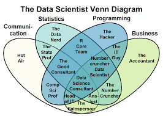

When I say the word ``Data Science" what’s the kind of stuff that pops into your mind?
What Does Data Science Mean?
Data science is in many ways a new field. But also not?
Brief History of Data Science
What does it connote now? Like. Right now.
Instead it’s helpful to think of data science not as a rigid field but as a constellation of competencies.

Except this is wrong
Cool. And Election Data Science?
What Are Not Going to Learn in this Course
Here are some things you are not going to learn in this class that are crucial if you want to get paid as a Data Scientist:
Python
SQL
AWS/Google/Azure cloud computing
Neural networks and “deep” learning.
Tableau
Calculus/Matrix algebra/Probability theory
Twi
what You Are Going to Learn
If You Learn Nothing Else:
Programming languages are just that: languages
Computers are the dumbest kind of magic.
Data never speak for themselves.
As data professionals, you have an inherent obligation to be ethical in your handling of data and in your presentation of your results. Every point is a person.
Analytical procedures do not make anything objective.ALL analyses are biased.
All data are artifacts of the time, place, people, and culture that it is generated from.
All models are fiction. Some fictions are illuminating.